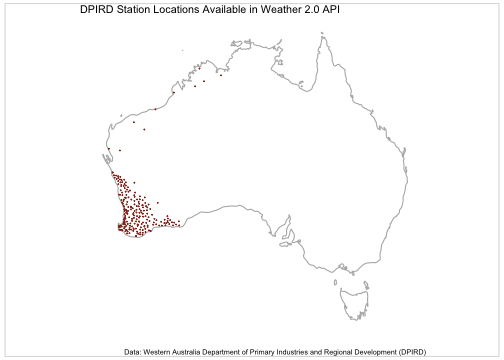
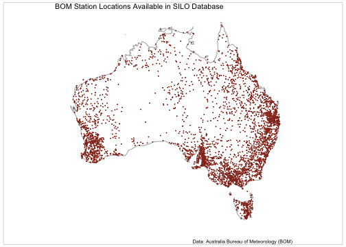

vignettes/weatherOz.Rmd
weatherOz.Rmd{weatherOz} provides automated downloading, parsing, and formatting of weather data for Australia through API endpoints provided by the Department of Primary Industries and Regional Development (DPIRD) of Western Australia, and by the Science and Technology Division of the Queensland Government’s Department of Environment and Science (DES). As well as Australian Government Bureau of Meteorology (‘BOM’) précis and coastal forecasts, agriculture bulletin data, and downloading and importing radar and satellite imagery files.
DPIRD weather data are accessed through public APIs provided by DPIRD, https://www.agric.wa.gov.au/weather-api-20, providing access to weather station data from DPIRD’s own weather station network. Detailed information on using {weatherOz} with DPIRD data is available in the vignette.
Australia-wide weather data are based on data from the Australian Bureau of Meteorology (BOM) data and accessed through SILO (Scientific Information for Land Owners) (Jeffery et al., 2001). More details on using {weatherOz} with SILO data are available in the vignette.
BOM also serves several types of data data as XML, JSON and SHTML
files. This package fetches these files, parses them and return a data
frame. Satellite and radar imagery files are also made available to the
public via anonymous FTP. {weatherOz} provides functionality to query,
fetch and create terra::SpatRaster() or {stars} objects of
GeoTIFF satellite imagery or a {magick} object of radar image.png files.
For detailed information on using {weatherOz} with BOM data, please see
the weatherOz for BOM
Data Resources vignette.
Following is a quick demonstration of some common tasks that you may wish to undertake while using {weatherOz}.
Daily summary weather data is frequently used. The following example will demonstrate how you can find and download weather station data for stations in or near Northam, WA for the year of 2022. This example assumes that you have stored your DPIRD API key in your .Renviron file.
library(weatherOz)
Northam <-
find_nearby_stations(
longitude = 116.6620,
latitude = -31.6540,
which_api = "dpird",
api_key = Sys.getenv("DPIRD_API_KEY"),
distance_km = 20
)
Northam
#> station_code station_name longitude latitude state elev_m
#> 1: NO Northam 116.6942 -31.65161 WA 163
#> 2: MK Muresk 116.6913 -31.72772 WA 251
#> owner distance_km
#> 1: WA Department of Primary Industries and Regional Development (DPIRD) 3.23
#> 2: WA Department of Primary Industries and Regional Development (DPIRD) 7.93There are two stations within 20km of the coordinates for Northam, WA that we provided. We’ll choose the closest, Northam, station_code NO to fetch the daily weather data for all air temperature, rainfall and relative humidity values.
dpird_daily <- get_dpird_summaries(
station_code = "NO",
start_date = "2022-01-01",
end_date = "2022-12-31",
values = c("airTemperature", "rainfall", "relativeHumidity"),
api_key = Sys.getenv("DPIRD_API_KEY")
)
dpird_dailyDaily weather station observations with interpolated missing values are available from SILO. The following example will demonstrate how you can find and download weather station data for stations in or near Toowoomba, Qld for the year of 2022. This example assumes that you have stored your SILO API key (email address) in your .Renviron file.
library(weatherOz)
Tbar <-
find_nearby_stations(
longitude = 151.9507,
latitude = -27.5598,
which_api = "silo",
api_key = Sys.getenv("SILO_API_KEY"),
distance_km = 20
)
Tbar
#> station_code station_name longitude latitude state elev_m owner
#> 1: 041103 Toowoomba 151.9317 -27.5836 QLD 691.0 BOM
#> 2: 041529 Toowoomba Airport 151.9134 -27.5425 QLD 640.9 BOM
#> 3: 041369 Moyola 151.8819 -27.5233 QLD 559.0 BOM
#> 4: 041039 Gowrie Junction 151.9000 -27.5000 QLD 484.6 BOM
#> 5: 040421 Spring Bluff Railway Stn 151.9900 -27.4636 QLD 480.0 BOM
#> 6: 041126 Westbrook 151.8292 -27.6197 QLD 539.0 BOM
#> 7: 040153 Murphys Creek Post Office 152.0667 -27.4667 QLD 228.0 BOM
#> 8: 040096 Helidon Post Office 152.1246 -27.5504 QLD 155.0 BOM
#> 9: 041031 Geham State School 152.0150 -27.4058 QLD 600.0 BOM
#> 10: 041011 Cambooya Post Office 151.8650 -27.7072 QLD 476.0 BOM
#> 11: 041512 Cooby Creek Dam 151.9244 -27.3825 QLD 497.0 BOM
#> distance_km
#> 1: 3.241492
#> 2: 4.149375
#> 3: 7.903524
#> 4: 8.317686
#> 5: 11.375373
#> 6: 13.699640
#> 7: 15.425992
#> 8: 17.172757
#> 9: 18.257690
#> 10: 18.433372
#> 11: 19.881135There are 11 stations within 20km of the coordinates for Toowoomba, Qld that we provided in the SILO database. We’ll choose the closest, Toowoomba, station_code 041103 to fetch the daily weather data for all air temperature, rainfall and relative humidity values.
ppd <- get_patched_point(
station_code = "041103",
start_date = "2022-01-01",
end_date = "2022-12-31",
values = c("max_temp", "min_temp", "rain", "rh_tmax", "rh_tmin"),
api_key = Sys.getenv("SILO_API_KEY")
)
ppd
#> station_code station_name longitude latitude elev_m date year month day
#> 1: 041103 Toowoomba 151.9317 -27.5836 691.0 m 2022-01-01 2022 2022 2022
#> 2: 041103 Toowoomba 151.9317 -27.5836 691.0 m 2022-01-02 2022 2022 2022
#> 3: 041103 Toowoomba 151.9317 -27.5836 691.0 m 2022-01-03 2022 2022 2022
#> 4: 041103 Toowoomba 151.9317 -27.5836 691.0 m 2022-01-04 2022 2022 2022
#> 5: 041103 Toowoomba 151.9317 -27.5836 691.0 m 2022-01-05 2022 2022 2022
#> ---
#> 361: 041103 Toowoomba 151.9317 -27.5836 691.0 m 2022-12-27 2022 2022 2022
#> 362: 041103 Toowoomba 151.9317 -27.5836 691.0 m 2022-12-28 2022 2022 2022
#> 363: 041103 Toowoomba 151.9317 -27.5836 691.0 m 2022-12-29 2022 2022 2022
#> 364: 041103 Toowoomba 151.9317 -27.5836 691.0 m 2022-12-30 2022 2022 2022
#> 365: 041103 Toowoomba 151.9317 -27.5836 691.0 m 2022-12-31 2022 2022 2022
#> extracted daily_rain daily_rain_source max_temp max_temp_source min_temp
#> 1: 2023-07-08 7.6 25 22.8 25 16.6
#> 2: 2023-07-08 0.1 25 27.7 25 14.2
#> 3: 2023-07-08 0.0 25 29.4 25 13.8
#> 4: 2023-07-08 0.0 25 30.0 25 16.8
#> 5: 2023-07-08 0.0 25 29.5 25 17.5
#> ---
#> 361: 2023-07-08 0.0 25 26.2 25 15.1
#> 362: 2023-07-08 0.2 25 26.7 25 13.0
#> 363: 2023-07-08 0.0 25 27.6 25 14.1
#> 364: 2023-07-08 0.7 25 27.0 25 17.0
#> 365: 2023-07-08 0.3 25 27.7 25 16.4
#> min_temp_source rh_tmax rh_tmax_source rh_tmin rh_tmin_source
#> 1: 25 72.1 26 100.0 26
#> 2: 25 47.1 26 100.0 26
#> 3: 25 38.8 26 100.0 26
#> 4: 25 43.1 26 95.7 26
#> 5: 25 49.2 26 100.0 26
#> ---
#> 361: 25 47.9 26 95.0 26
#> 362: 25 43.7 26 100.0 26
#> 363: 25 44.1 26 100.0 26
#> 364: 25 60.3 26 100.0 26
#> 365: 25 50.9 26 100.0 26{weatherOz} offers much more functionality that is detailed in other vignettes that document how to use it to get station metadata for any station in the DPIRD or SILO databases, get extreme weather events for the DPIRD station network, get minute data for DPIRD stations, get APSIM formatted data from SILO, get ag bulletins, précis forecasts and various imagery files from BOM in the respective vignettes for DPIRD, SILO and BOM data available through {weatherOz}.
# this chunk assumes that you have your DPIRD API key in your .Renviron file
if (requireNamespace("ggplot2", quietly = TRUE) &&
requireNamespace("ggthemes", quietly = TRUE) &&
requireNamespace("gridExtra", quietly = TRUE) &&
requireNamespace("grid", quietly = TRUE) &&
requireNamespace("maps", quietly = TRUE)) {
library(ggplot2)
library(mapproj)
library(maps)
library(ggthemes)
library(grid)
library(gridExtra)
dpird_stations <-
get_station_metadata(which_api = "DPIRD",
api_key = Sys.getenv("DPIRD_API_KEY"))
Aust_map <- map_data("world", region = "Australia")
dpird_stations <-
ggplot(dpird_stations, aes(x = longitude, y = latitude)) +
geom_polygon(
data = Aust_map,
aes(x = long, y = lat, group = group),
color = grey(0.7),
fill = NA
) +
geom_point(color = grDevices::rgb(0.58, 0.20, 0.13),
size = 0.05) +
coord_map(ylim = c(-44, -10),
xlim = c(112, 154)) +
theme_map() +
labs(title = "DPIRD Station Locations Available in Weather 2.0 API",
caption = "Data: Western Australia Department of Primary Industries and Regional Development (DPIRD)")
# Using the gridExtra and grid packages add a neatline to the map
grid.arrange(dpird_stations, ncol = 1)
grid.rect(
width = 0.98,
height = 0.98,
gp = grid::gpar(
lwd = 0.25,
col = "black",
fill = NA
)
)
}
plot of chunk dpird-station-locations-map
if (requireNamespace("ggplot2", quietly = TRUE) &&
requireNamespace("ggthemes", quietly = TRUE) &&
requireNamespace("gridExtra", quietly = TRUE) &&
requireNamespace("grid", quietly = TRUE) &&
requireNamespace("maps", quietly = TRUE)) {
library(ggplot2)
library(mapproj)
library(maps)
library(ggthemes)
library(grid)
library(gridExtra)
silo_stations <- get_station_metadata(which_api = "SILO")
Aust_map <- map_data("world", region = "Australia")
SILO_stations <-
ggplot(silo_stations, aes(x = longitude, y = latitude)) +
geom_polygon(
data = Aust_map,
aes(x = long, y = lat, group = group),
color = grey(0.7),
fill = NA
) +
geom_point(color = grDevices::rgb(0.58, 0.20, 0.13),
size = 0.05) +
coord_map(ylim = c(-44, -10),
xlim = c(112, 154)) +
theme_map() +
labs(title = "BOM Station Locations Available in SILO Database",
caption = "Data: Australia Bureau of Meteorology (BOM)")
# Using the gridExtra and grid packages add a neatline to the map
grid.arrange(SILO_stations, ncol = 1)
grid.rect(
width = 0.98,
height = 0.98,
gp = grid::gpar(
lwd = 0.25,
col = "black",
fill = NA
)
)
}
plot of chunk silo-station-locations-map